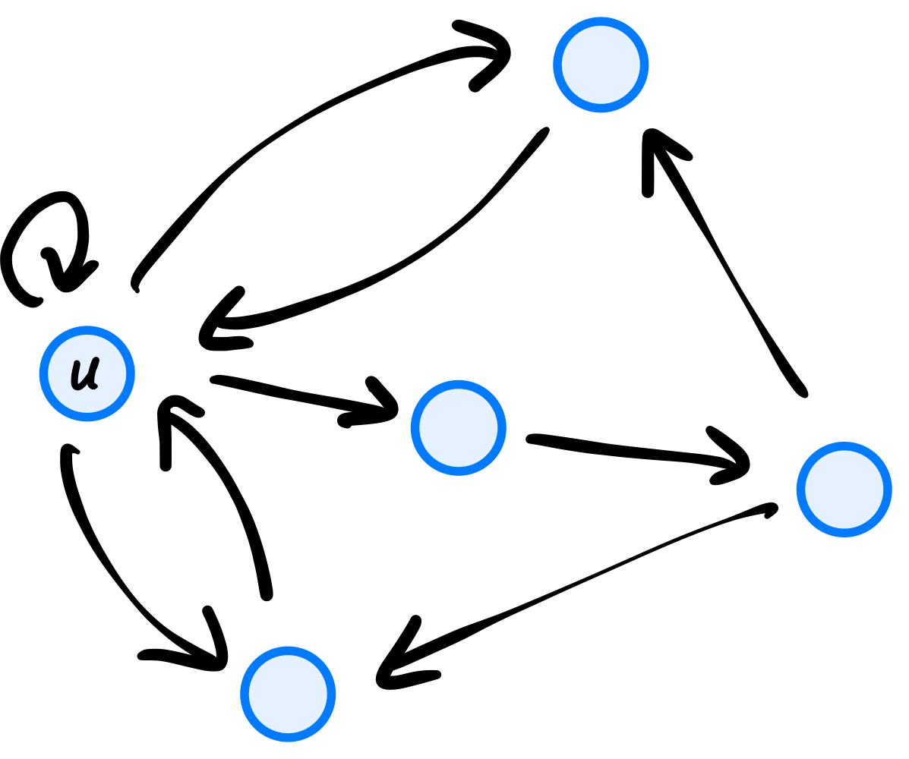
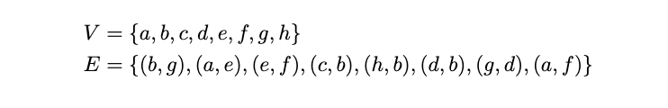
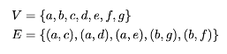

Problems tagged with "lecture-10"
Problem #189
Tags: graph theory, lecture-10
What type of graph would be best for representing a network of friends on social media, where friendships are mutual? (i.e, if person A is person B's friend, person B is also person A's friend)
Solution
An undirected graph. Since friendship is symmetric, an edge between A and B has no direction.
Problem #190
Tags: graph theory, lecture-10
Consider the graph below

What is the out degree of node \(0\)?
Solution
Answer: 3. Node 0 has edges to 2, 4, and 5.
Problem #191
Tags: graph theory, lecture-10
What is the out-degree of node \(u\) in the graph shown below?

Solution
4
Problem #192
Tags: graph theory, lecture-10
Let \(V = \{a, b, c, d\}\) and \(E = \{(a,b), (a,a), (a,c), (d,b), (c,a)\}\) be the nodes and edges of a directed graph. How many predecessors does node \(b\) have?
Solution
2
Problem #193
Tags: graph theory, lecture-10
Suppose \(u\) is a node in a complete, undirected graph \(G = (V,E)\). What is the degree of \(u\)? Remember, an undirected graph is complete if it contains every possible edge.
Solution
\(|V| - 1\)
Problem #194
Tags: graph theory, lecture-10
Let \(G = (V, E)\) be a directed graph, and suppose \(u, v, w \in V\) are all nodes. True or False: if \(w\) is reachable from \(v\), and \(v\) is reachable from \(u\), then \(w\) is reachable from \(u\).
Solution
True.
There is a path from \(u\) to \(v\) and a path from \(v\) to \(w\). Following the first path and then the second gives a path from \(u\) to \(w\) (all of the edges point in the right direction, since each path follows its edges forward).
Problem #195
Tags: connected components, graph theory, lecture-10
Let \(C\) be a connected component in an undirected graph \(G\). Suppose \(u_1\) is a node in \(C\) and let \(u_2\) be a node that is reachable from \(u_1\). True or False: \(u_2\) must also be in the same connected component, \(C\).
Solution
True.
A connected component contains every node that is reachable from any of its nodes; it is a maximal set of nodes that can all reach one another. Since \(u_2\) is reachable from \(u_1\), it is in the same component as \(u_1\), which is \(C\).
Problem #196
Tags: graph theory, lecture-10
Let \(v = \{a, b, c, d, e, f, g\}\) and \(E = \{(a,g), (b,d), (d, e), (f, d)\}\). How many connected components does the undirected graph \(G =(V, E)\) have?
Solution
3
Problem #197
Tags: connected components, lecture-10
Consider the undirected graph \(G = (V, E)\) with
\(V = \{0, 1, 2, 3, 4, 5, 6, 7\}\) \(E = \{(0, 1), (3, 6), (1, 5), (2, 4), (3, 4)\}\)
What are the connected components of \(G\)?
Solution
\(\{\{0, 1, 5\}, \{2, 3, 4, 6\}, \{7\}\}\). The edges \((0,1)\) and \((1,5)\) connect 0, 1, and 5. The edges \((2,4)\), \((3,4)\), and \((3,6)\) connect 2, 3, 4, and 6. Node 7 has no edges, so it is a connected component by itself.
Problem #198
Tags: connected components, lecture-10
Let \(G = (V,E)\) be an undirected graph with:

True or False: \(\{b, d, g\}\) is a connected component of this graph.
Solution
False. The connected components of this graph are \(\{a, e, f\}\) and \(\{b, c, d, g, h\}\).
Remember: a connected component has to contain all nodes reachable from any node in the component. While \(b\), \(d\), and \(g\) are all reachable from one another (and are “connected”), they do not form a connected component because there are more nodes reachable from this group: namely, \(h\) and \(c\).
Problem #199
Tags: connected components, lecture-10
Let \(G = (V,E)\) be an undirected graph with:

True or False: \(\{a, d, e\}\) is a connected component of this graph.
Solution
False.
Node \(c\) is also reachable from \(a\) via the edge \((a, c)\), so \(\{a, d, e\}\) isn't a maximal set of connected nodes. The connected component containing \(a\) is \(\{a, c, d, e\}\).
Problem #200
Tags: connected components, graph theory, lecture-10
Let \(G = (V, E)\) be an undirected graph, and suppose that \(u, v, \) and \(w\) are three nodes in \(V\). Suppose that \(u\) and \(v\) are in the same connected component, but \(u\) and \(w\) are not in the same connected component. True or False: it is possible that \(v\) and \(w\) are in the same connected component.
Solution
False.
If \(v\) and \(w\) were in the same connected component, then there would be a path from \(u\) to \(v\) and a path from \(v\) to \(w\), and putting them together gives a path from \(u\) to \(w\). That would put \(u\) and \(w\) in the same component, which contradicts what we were told. (In other words, the connected components split the nodes into non-overlapping groups.)
Problem #201
Tags: graph theory, lecture-10
An undirected graph has 5 nodes. What is the greatest number of edges it can have?
Solution
10
Problem #202
Tags: graph theory, lecture-10
You are told that a directed graph has 10 nodes. If the graph is fully connected with the exception of self loops (meaning, it has all possible edges except self loops) how many edges are there?
Solution
Answer: 90. Each of the 10 nodes has an edge to each of the other 9 nodes, giving \(10 \times 9 = 90\) edges. (Equivalently, \(10^2 = 100\) possible ordered pairs, minus the 10 self loops.)
Problem #203
Tags: graph theory, lecture-10
Let \(G\) be an undirected graph. Suppose that the degree of every node in the graph is greater than or equal to one. True or False: \(G\) must be connected.
Solution
False.
Take four nodes \(a, b, c, d\) with edges \((a, b)\) and \((c, d)\). Every node has degree 1, but the graph has two connected components, \(\{a, b\}\) and \(\{c, d\}\).
Problem #204
Tags: connected components, graph theory, lecture-10
Suppose \(G = (V, E)\) is an undirected graph. Let \(k\) be the number of connected components in \(G\). True or False: it is possible that \(k > |E|\).
Solution
True.
For example, a graph with 3 nodes and no edges has \(k = 3\) connected components (each node is its own component) but \(|E| = 0\).
Problem #205
Tags: graph theory, lecture-10
Let \(G = (V, E)\) be a directed graph with \(|V| > 1\). Suppose that every node in \(G\) is reachable from every other node. True or False: each node in the graph must have an out-degree of at least one and an in-degree of at least one.
Solution
True.
Pick any node \(u\), and let \(v\) be some other node (one exists because \(|V| > 1\)). Since \(v\) is reachable from \(u\), there is a path out of \(u\), and the first edge of that path leaves \(u\), so \(u\) has out-degree at least one. Similarly, since \(u\) is reachable from \(v\), the last edge of that path enters \(u\), so \(u\) has in-degree at least one.
Problem #206
Tags: graph theory, lecture-10
Let \(G = (V, E)\) be a connected, undirected graph with 16 nodes and 35 edges. What is the greatest possible number of edges that can be in a simple path within \(G\)?
Solution
15
Problem #207
Tags: connected components, graph theory, lecture-10
Suppose an undirected graph \(G = (V,E)\) has two connected components, \(C_1\) and \(C_2\). Suppose that \(|C_1| = 4\) and \(|C_2| = 3\). What is the largest that \(|E|\) can possibly be?
Solution
Answer: 9. To load a graph with the most edges, make each connected component "fully connected". The most edges we can put in a component with 4 nodes is \(4 * 3 / 2 = 6\), and the most we can put into a component with 3 nodes is \(3 * 2 / 2 = 3\). Therefore, we can put at most 9 edges in this graph.
Problem #208
Tags: connected components, lecture-10
Suppose an undirected graph has 3 connected components and 7 nodes. What is the maximum number of edges it can have?
Solution
10
Problem #209
Tags: graph theory, lecture-10
Suppose an undirected graph has 16 edges. What is the smallest number of nodes it can have?
Solution
7
Problem #210
Tags: graph theory, lecture-10
A directed graph has 10 edges. What is the smallest number of nodes it can have?
Solution
4
Problem #211
Tags: graph theory, lecture-10
Suppose a directed graph has 5 nodes and 3 edges. What is the greatest possible degree of any node in the graph?
Solution
Remember that nodes can have self loops, and that the degree of a node with only a self-loop is 2. So a node that has a self loop and two other edges leaving it has a degree of 4.
Problem #212
Tags: graph theory, lecture-10
Consider the graph below

How many simple paths are there from \(0\) to \(5\)?
Solution
Answer: 3. They are \(0 \to 5\), \(0 \to 4 \to 5\), and \(0 \to 2 \to 4 \to 5\).
Problem #213
Tags: graph theory, lecture-10
Consider the graph below

True or False: there are infinitely many paths from \(0\) to \(5\). (Here, "path" means any path, not necessarily a simple path.)
Solution
False. Paths may repeat nodes, so there would be infinitely many paths from 0 to 5 if some path from 0 to 5 could go around a cycle. But this graph has no cycles (every edge goes "forward"), so no path can repeat a node, and the only paths from 0 to 5 are the three simple paths \(0 \to 5\), \(0 \to 4 \to 5\), and \(0 \to 2 \to 4 \to 5\).
Problem #214
Tags: connected components, lecture-10
Let \(G\) be an undirected graph, and suppose \(u\) and \(v\) are two nodes belonging to the same connected component of \(G\), with \(v\) being a neighbor of \(u\). That is, the edge \((u, v)\) is in \(G\).
Let \(G'\) be the graph obtained from \(G\) by deleting the edge \((u, v)\). True or False: \(u\) and \(v\) must still be in the same connected component of the new graph, \(G'\).
Solution
False.
If the edge \((u, v)\) is the only path between them, deleting it disconnects them. For example, if \(G\) has just the two nodes \(u\) and \(v\) and the single edge \((u, v)\), then after deleting it, \(u\) and \(v\) are each in their own connected component. (They do stay connected if some other path between them exists, but that isn't guaranteed.)
Problem #215
Tags: connected components, lecture-10
Suppose that every node in an undirected graph with \(n\) nodes has degree 2.
True or False: \(G\) must have one connected component.
Solution
False.
Consider a graph with 6 nodes made up of two separate triangles. Every node has degree 2, but the graph has two connected components.
Problem #216
Tags: graph theory, lecture-10
Let \(G=(V,E)\) be an undirected graph with \(V=\{a,b,c,d,e\}\) and \(E=\{(a,b),(c,d),(e,a),(b,c),(e,d),(d,a)\}\).
True or False: it is possible to color nodes of \(G\) with red and blue such that there are no edges between nodes of the same color.
Solution
False.
The edges \((a, d)\), \((d, e)\), and \((e, a)\) form a triangle. Whichever colors we give \(a\), \(d\), and \(e\), two of these three nodes must share a color, and they are joined by an edge.
Problem #217
Tags: graph theory, lecture-10
Let \(G = (V, E)\) be a directed graph with the property that there is a node \(u\) in \(G\) such that every other node in \(G\) is reachable from \(u\).
Let \(H \) be the directed graph obtained from \(G\) by reversing the direction of every edge. True or False: there must be a node \(v\) in \(H\) such that every other node in \(H\) is reachable from \(v\).
Solution
False. Consider the graph \(a \leftarrow b \rightarrow c\). Every node is reachable from \(b\). Now flip the edges to get the graph: \(a \rightarrow b \leftarrow c\). There's no node from which every other node is reachable.
Problem #218
Tags: graph representations, lecture-10
Let \(A\) be the adjacency matrix representing a directed graph with $n$ nodes. What is the greatest possible sum of any row of \(A\)?
Solution
\(n\)
Problem #219
Tags: graph representations, lecture-10
Let \(A\) be the adjacency matrix representing a undirected graph with \(n\) nodes. What is the greatest possible sum of any row of \(A\)?
Solution
\(n - 1\). The sum of row \(i\) is the degree of node \(i\). Since an undirected graph has no self-loops, a node can be adjacent to at most the other \(n - 1\) nodes.
Problem #223 🌶️
Tags: graph representations, lecture-10
An isolated node in an undirected graph is a node that has no neighbors.
Suppose a graph \(G = (V, E)\) is represented using an adjacency matrix. What is the best possible worst-case time complexity of an efficient algorithm for computing the number of isolated nodes in the graph? State your answer as a function of \(|V|\) and \(|E|\) using asymptotic notation.
Solution
\(\Theta(V^2)\)
Problem #224
Tags: graph representations, lecture-10
An “isolated node” in a graph is a node that has no edges attached to it.
What is the worst case time complexity of an efficient algorithm that checks to see if a graph \(G = (V, E)\) has an isolated node? You should assume that the graph is represented as an adjacency list.
Solution
\(\Theta(V)\)
Problem #225
Tags: graph representations, lecture-10
Let \(A\) be the adjacency matrix of the graph shown below:

Let \(\vec{a}^{(1)}\) be the first row of \(A\) and \(\vec{a}^{(2)}\) be the second row of \(A\). What is \(\vec{a}^{(1)} \cdot \vec{a}^{(2)}\)? That is, what is the dot product between the first row of \(A\) and the second row of \(A\)? Your answer should be in the form of a number.
It may help to recall that the dot product between vectors \(\vec x = (x_1, \ldots, x_d)^T\) and \(\vec y = (y_1, \ldots, y_d)^T\) is equal to \(x_1 y_1 + x_2 y_2 + \ldots + x_d y_d\).
Solution
4
Problem #226 🌶️
Tags: graph theory, lecture-10
The adjacency matrix of a directed graph with nodes \(u_1, \ldots, u_8\) is shown below:
True or False: there is a path from node \(u_1\) to node \(u_8\).
Solution
True.
Reading each row as the edges leaving that node, we can follow the path \(u_1 \to u_2 \to u_3 \to u_4 \to u_5 \to u_6 \to u_7 \to u_8\).
Problem #239 🌶️
Tags: graph theory, lecture-10
A “hub node” in a graph is a node that has an edge to all the other nodes in the graph.
What is the worst case time complexity of an efficient algorithm that checks to see if a graph \(G = (V,E)\) has a hub node? You should assume that the graph is represented as an adjacency list. State your answer in asymptotic notation and in terms of \(V\) and \(E\).
Note: in studying, you might have come across a problem in the practice bank about “hub and spoke” graphs. This question is related, but not the same!
Solution
\(\Theta(V)\)
Problem #249
Tags: graph theory, lecture-10
An undirected graph \(G = (V, E)\) has 23 nodes and 2 connected components. What is the smallest number of edges it can have?
Solution
21
Problem #250
Tags: connected components, graph theory, lecture-10
An undirected graph with 20 nodes and 30 edges has three connected components: \(A\), \(B\), and \(C\). Connected component \(A\) has 7 nodes. What is the smallest number of edges it can have?
Solution
6
No 🌶️ problems in this topic.